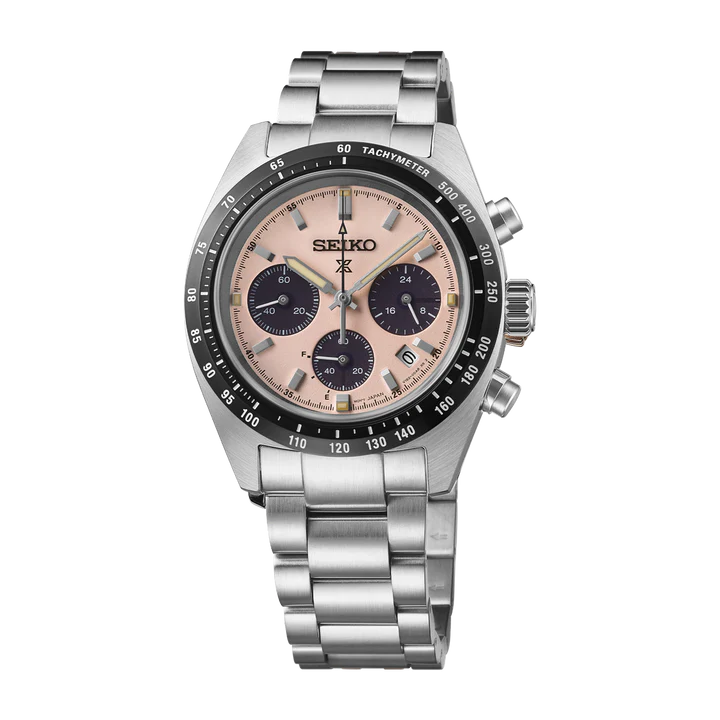

Solar • Sports Chronograph
Seiko Prospex Speedtimer SSC963P1
₹70,000
A modern Prospex chronograph featuring a distinctive pale pink dial, solar-powered movement, and precision timing functions. Designed for performance with everyday wearability.
Specifications
Gender: Men
Movement: Solar (Calibre V192)
Accuracy: ±15 sec/month
Power: 6 months / 2 years (power save)
Case: Stainless Steel
Shape: Round
Diameter: 39.0 mm
Thickness: 13.3 mm
Length: 45.5 mm
Lug Width: 20 mm
Bracelet Length: 205 mm
Dial: Pale Pink
Glass: AR-coated (inner)
Water Resistance: 10 bar
Clasp: Three-fold push button
Band: Stainless Steel
Band Color: Steel
Functions:
24-hour hand, Chronograph (60 min, 1/5 sec), Date display,
Small seconds, Power reserve indicator,
Overcharge prevention
Small seconds, Power reserve indicator,
Overcharge prevention